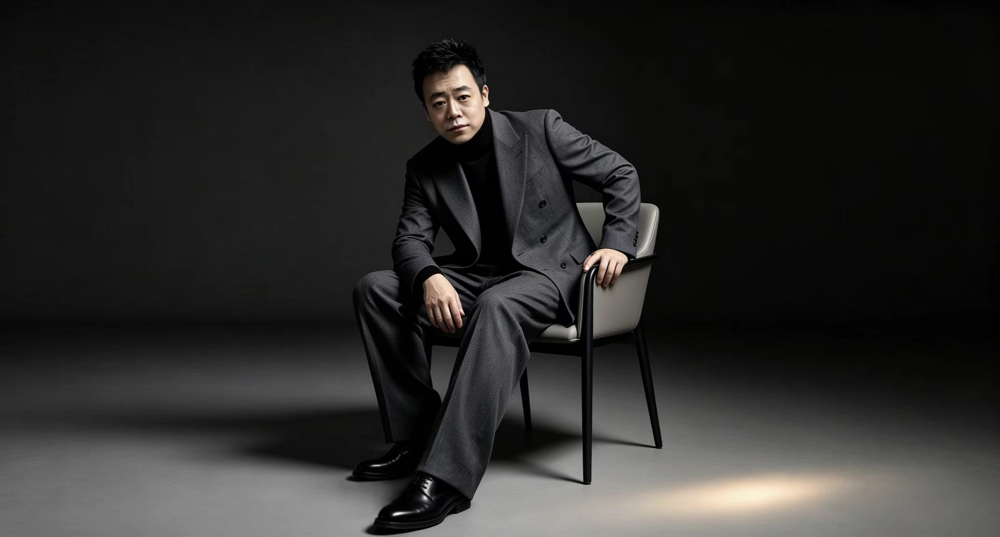

创始人：王伟
架构师 / 开源框架自研 / 自研底层框架
1.十余年后端、前端架构研发经验，深耕 C++、GO、PHP、java、Javascript、Python。
2.自研 ChameleonUI 组件库 、QFS分布式文件存储系统、QPHP MVC框架。
3.开源Ai框架 LangGraph、FastMCP、Agent、Milvus 开发ChameleonAi。
4.熟练开源框架 SolidJS2、TailwindCSS4、Java生态、Thinkphp。
5.偏好可控、轻量、工程化方案，专注底层与业务落地。
介绍
历经十年心劫，
读过千本书，我对人性，已看得透彻：
人性本无善恶，自私与趋利，唯求生而已。
善与道德，是教化与环境的结果；
自私与趋利，是底层本能。
平常日子，可温良、可共情、可付出；
极端绝境，先自保、不苛责、不伪善。
一块馒头分两半，共活，是家人；
半块馒头自保而活，是人性；
舍己予人，是圣人。
我不神化道德，不贬低人性，懂底线，知冷暖，惜真情。
人生三关：
淡钱能赚，重情不困，惜生不畏。
人生四态：
人生苦短，必须性感；
人生如戏，全凭演技；
醉卧温柔，醒掌乾坤；
皇图霸业谈笑中，不如人生一场醉。
活着的意义：
不为虚名枷锁，只为幸福、享受、心安。
入世从容，出世通透，此生尽兴，不负自己。
真正成熟的人：
敢为自己做决定，敢为结果买单，敢守住自己的边界，不需要任何人批准自己的人生。